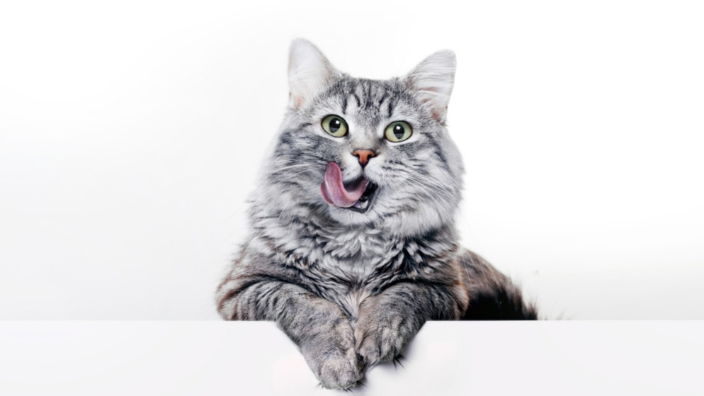
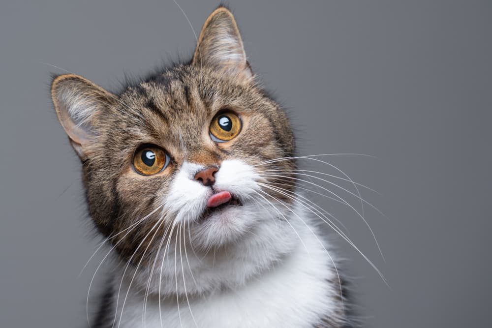
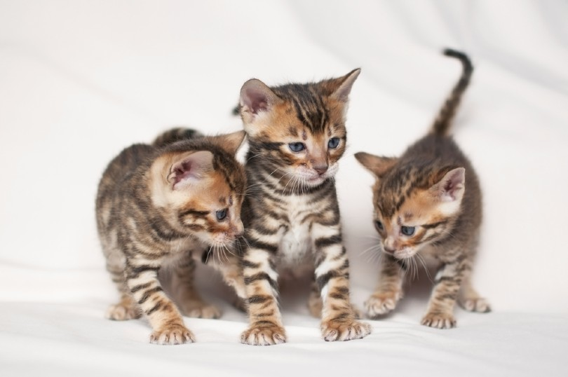

Cat Age
How Do You Convert Cat Years to Human Years?

Cat species explained:
The one most of us know is the domestic cat (Felis catus), which humans have lived with for thousands of years. And yet, they still pretend we’re their staff.
- Year 1 = 15 human years
- Year 2 = 24 human years total
- Each year after = +4 human years
The first year of your cat’s life is considered the equivalent of 15 human years. The second year adds nine more human years, so two cat years are approximately 24 human years. After this, each additional human year is four “cat years,” i.e., age 3 will be 28 human years, or if your cat is six years old, it is equivalent to a 40-year-old human.
How Many Cat Years Are in a Human Year?

You’ll often hear that there are 7 cat years in a single human year. The “7-year” rule is simple for a broad answer. However, it is not entirely accurate.
Cats age faster during the first 2 years of life. In a feline’s first year, he or she reaches the human age equivalent of 15. By a feline’s second year, he or she is the equivalent of age 24.
How Long Do Cats Live? (Cat Life Expectancy)

So, how long do cats live anyway? According to the American Animal Hospital Association, your feline friend is considered to be a senior after they reach 10 years of age. However, many cats live well into their golden years, with an average lifespan of 13-17 years.
We have even heard of cats living well into their 20s … you know what they say, cats have nine lives!
Year:2026
Copyright ©